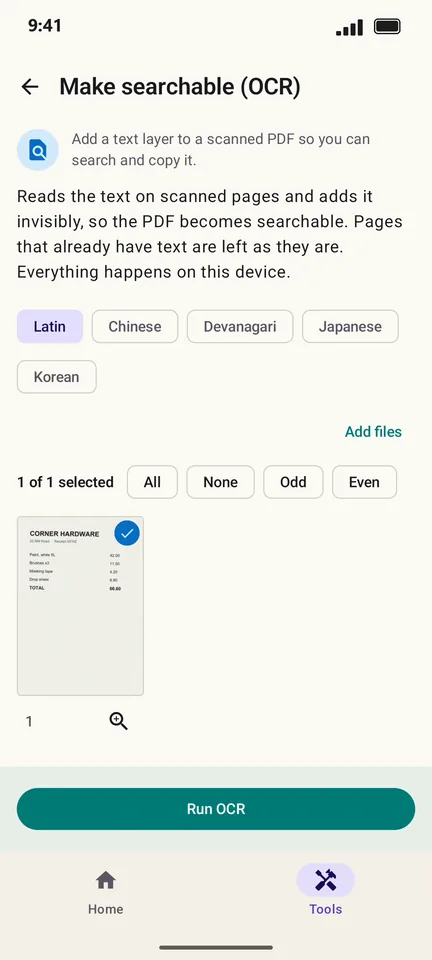
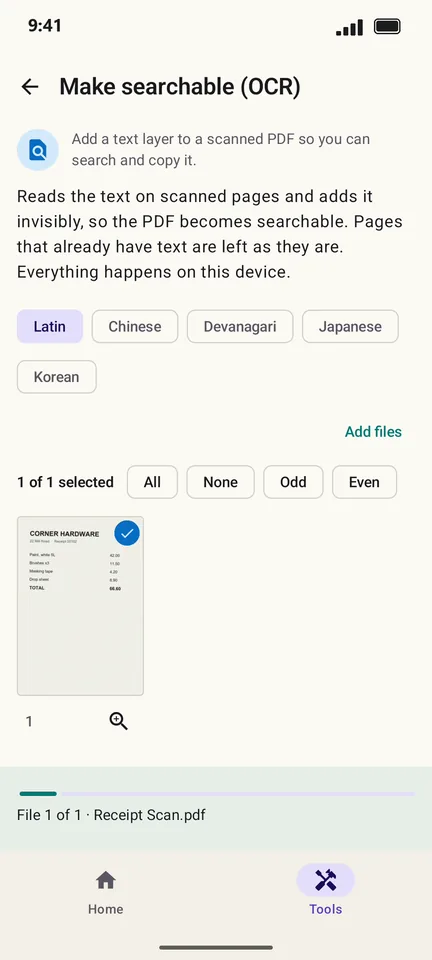

How to make a scanned PDF searchable (OCR) on Android
A scanned PDF is only a picture of text: you cannot search it or copy from it. PageCat reads the text on each page and adds it as an invisible layer, so search and copy work, all on your phone.
Steps
Open the Tools tab, tap Make searchable (OCR) and pick the scanned PDF.

Choose the script of the document: Latin, Chinese, Devanagari, Japanese or Korean.
Tap Run OCR. PageCat reads each page; the result says how many pages it read.

Good to know
- Pages that already have text are left as they are.
- PageCat's file search can find words inside your PDFs. Searchable PDFs are found by their content, not just their name.
Questions
Is my document sent to the cloud for OCR?
No. Text recognition runs on your phone.
Which languages does OCR support?
Languages written in Latin letters (English, Spanish, French, German and many more), plus Chinese, Devanagari (such as Hindi), Japanese and Korean.